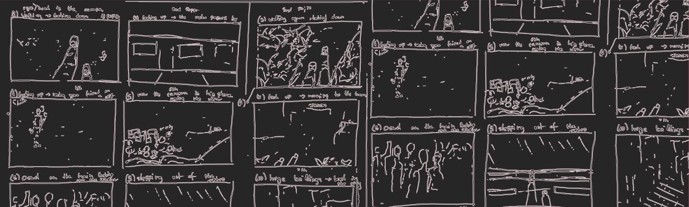

I see animation as a powerful way of developing visual storytelling, as it requires planning, structure, and a clear sense of how an idea unfolds over time. It is a practice that helps me think more consciously about narrative, perspective, and how visuals can guide attention and emotion.
Through animation, I am also improving my understanding of creative software and working with layers, timing, and sequencing. This technical side has been an important part of learning how to translate ideas into structured visual systems.
At the same time, animation gives me space to experiment with rhythm, movement, and sound, including background audio and more fast-paced drawing styles. It remains an important tool for exploring how storytelling can be built through motion and how simple visuals can gain meaning through time and interaction.

Across these projects, I work as a writer, illustrator, and editor. I start by writing a short story, narrative, or concept, which I then translate into a structured storyboard and visual sequence. I am also responsible for creating the animation drawings and compositions, as well as editing the final piece in Premiere Pro, including integrating sound to support rhythm and atmosphere.
These projects range from personal experiments to competition-based assignments with defined themes. Each project begins with a narrative idea, which is then developed into visual sequences through drawing, timing, and motion. While the topics vary, all works focus on translating written ideas into animated storytelling.
These projects form an ongoing exploration of animation as a storytelling tool. Through them, I am developing a stronger understanding of narrative structure, timing, layering, and software workflows. The process has helped me refine both my technical and conceptual approach, from early story development to final compositing, and strengthened my ability to build cohesive visual narratives over time.
Analogue Animation
The Symphony of Life
Analogue Animation Project
Symphony of Life is an analogue animation project developed for an international competition, exploring the idea of coexistence between humans, nature, and technology, not as separate forces but as interconnected elements. The work is based on a personal everyday memory, used to reflect this idea in a subtle and relatable way. Inspired by William Kentridge’s drawing, erasing, and redrawing technique, the animation reflects how memory is constantly reconstructed and layered over time.
2D Animation
Nirvana Remembering
2D Animation Project
This animation is based on an original short story that I wrote, edited, and later published as part of a self-developed collection of stories. Inspired by a fleeting memory connected to Nirvana's Smells Like Teen Spirit, the work explores how music can trigger emotions, images, and fragments of the past. The animation serves as a visual interpretation of the written narrative, translating its atmosphere and themes into movement and imagery. As one of my first animation projects, it became an important step in understanding how storytelling can move between different media, from writing and publishing to illustration and animation.